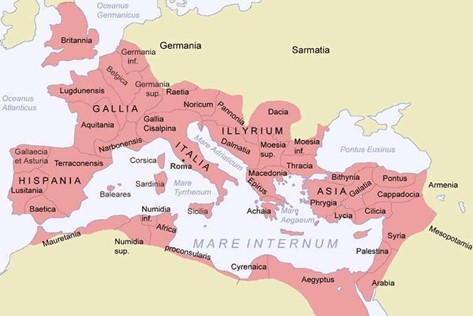
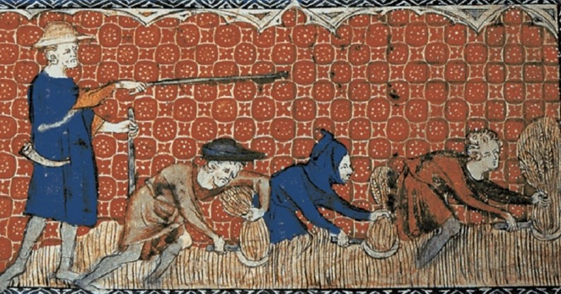

Hablar de la antigüedad de la política es muy extenso, pues, aunque el concepto fue acuñado entre finales del siglo
IXX e inicios del XX, antes de esto, en las primeras civilizaciones existían prácticas que iban muy ligadas a lo que
hoy en día se le considera geopolítica, con la diferencia de que no era llamado como tal.
Egipto
La civilización egipcia se desarrolló a lo largo del río Nilo, que era la columna vertebral de su economía y
supervivencia. El Nilo proporcionaba un sistema de irrigación natural que no solo favorecía la agricultura, sino que
también facilitaba el comercio y el transporte. En este contexto, los faraones egipcios no solo gobernaban una región
geográficamente privilegiada, sino que también eran conscientes de la importancia de dominar esta vía fluvial. El
control del Nilo era, por tanto, una cuestión estratégica de supervivencia. Además, la riqueza del valle del Nilo les
permitió crear un estado centralizado, capaz de movilizar recursos, incluida la mano de obra, para proyectos
monumentales y militares. Egipto también desarrolló una sofisticada diplomacia, formando alianzas y tratados con otras
potencias, como los hititas, para garantizar la estabilidad de su reino. Esto demuestra un entendimiento de la
geopolítica más allá de la simple dominación territorial: Egipto comprendió la interconexión de sus recursos
naturales, la influencia externa y la necesidad de asegurar su posición en un mundo interconectado.
Roma
El Imperio Romano es quizás el ejemplo más destacado de cómo la geopolítica antigua se basaba en la expansión
territorial y el control de vastos dominios. Roma entendió que el poder no solo se construía mediante la fuerza
militar, sino también a través de la infraestructura, la administración eficiente y el control de las rutas
comerciales. La construcción de una red de carreteras, que permitiera la rápida movilización de tropas y el flujo de
bienes a través del imperio, fue clave para mantener la cohesión del vasto territorio romano. Además, el control del
Mediterráneo, lo que los romanos llamaban Mare Nostrum, fue fundamental para su expansión. Las legiones romanas no
solo protegían las fronteras, sino que también aseguraban el acceso a los recursos naturales, como el oro de Hispania,
el trigo de Egipto y las especias de Asia, que eran vitales para el sustento económico del imperio.
Roma también comprendió la importancia de la integración cultural y administrativa de los pueblos conquistados. El
sistema de ciudadanía romana permitió a las elites locales integrarse en el sistema político romano, lo que contribuyó
a la estabilidad y lealtad dentro del imperio. Sin embargo, la sobre extensión territorial eventualmente se convirtió
en un desafío geopolítico, ya que las vastas fronteras del imperio se hicieron cada vez más difíciles de defender, lo
que llevó a la fragmentación del imperio en el siglo V. A pesar de ello, la influencia romana perduró a través de la
herencia cultural, legal y administrativa, estableciendo las bases para la geopolítica medieval y moderna.

En conjunto, estas civilizaciones antiguas sentaron las bases de la geopolítica moderna. Demostraron una comprensión
intuitiva de conceptos clave como la importancia de los recursos naturales, la infraestructura estratégica y las
relaciones internacionales. Desde el Nilo egipcio hasta las legiones romanas, estas civilizaciones comprendieron que
el poder no solo radicaba en la fuerza militar, sino en la habilidad de gestionar territorios, poblaciones y recursos
de manera eficiente. Aunque separadas por tiempo y espacio, estas antiguas sociedades compartían una visión común: la
prosperidad y la estabilidad de un estado dependían en gran medida de su capacidad para controlar recursos naturales,
rutas comerciales y establecer alianzas estratégicas. Este legado ancestral continúa influyendo en la manera en que
las naciones modernas conciben y practican la política internacional.
Edad Media
Feudalismo:
En la época del feudalismo, que se extendió principalmente entre los siglos IX y XV, la geopolítica no se concebía de
la manera moderna en la que entendemos las relaciones internacionales hoy en día. El concepto de “geopolítica” en ese
entonces era mucho más local y fragmentado, con un enfoque centrado en el control de tierras y recursos, así como en
las relaciones de poder entre señores feudales, reyes y otras entidades políticas. A continuación, se explora cómo se
veía la geopolítica durante este período y cómo influía en las dinámicas de poder.
La tierra como fuente de poder y seguridad
La clave del poder político durante el feudalismo era el control de la tierra. Las tierras eran la principal fuente de
riqueza, ya que generaban recursos naturales como alimentos, madera y metales. Además, el control sobre un feudo
implicaba la capacidad de ofrecer protección a los campesinos que trabajaban la tierra, lo que a su vez generaba
lealtad y una fuerza militar disponible para defender el territorio.
La seguridad territorial era uno de los pilares de la geopolítica medieval. Las tierras eran defendidas a través de
castillos fortificados y ejércitos de vasallos, en lugar de un ejército centralizado como en otras civilizaciones. Las
rutas comerciales también eran de suma importancia, ya que los señores feudales debían proteger las vías de transporte
y comercio de las invasiones o de otros señores que pudieran buscar expandir su territorio.
